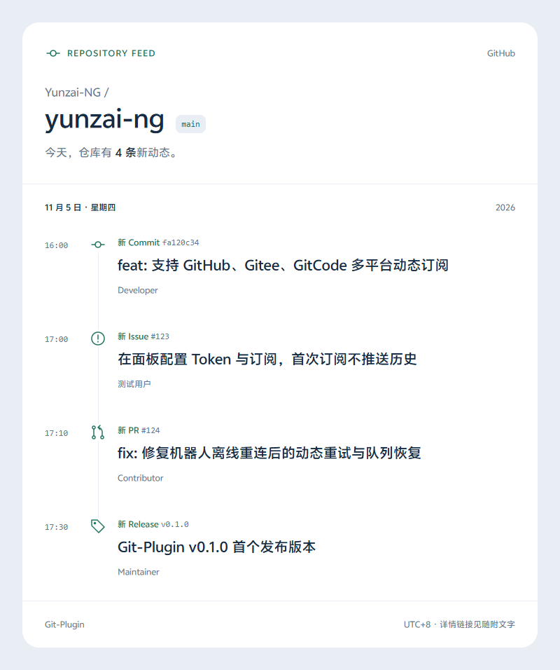
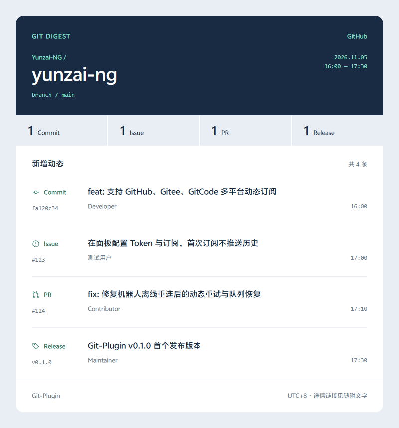
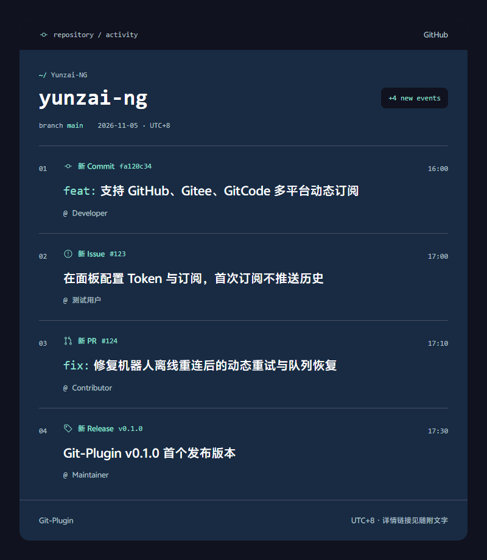
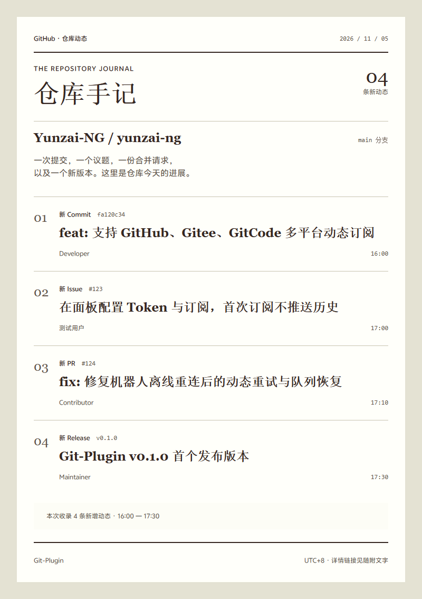

GIT-PLUGIN / DESIGN EXPLORATIONS
同样的动态，四种阅读方式。
同一组仓库内容 · 4 个独立方向 · 点击查看单张 HTML 预览
A
青绿时间线
按时间阅读，层次舒展

B
紧凑简报
信息密度高，适合日常群推送

C
深色开发者
深蓝工作台，等宽标识与青绿重点

D
纸感手记
暖色留白与报刊排版，适合版本汇总

预览方案 · 尚未切换插件当前样式
GIT-PLUGIN / DESIGN EXPLORATIONS
同一组仓库内容 · 4 个独立方向 · 点击查看单张 HTML 预览
按时间阅读，层次舒展

信息密度高，适合日常群推送

深蓝工作台，等宽标识与青绿重点

暖色留白与报刊排版，适合版本汇总

预览方案 · 尚未切换插件当前样式